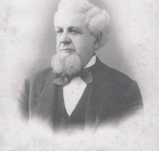

The Wyoming Historical Museum is located on the south side of Main Street in Wyoming, Iowa, housed in the “Williams Hotel” that was built by Royal Seneca Williams in 1878. “R.S. Williams”, as he was known, was born October 1, 1824 in Chesterfield, Massachusetts. He came to Wyoming, Iowa about 1860.
On September 6, 1862, at the age of 38, R. S. Williams joined Company K of the 24th Regiment that was sworn in at Wyoming. He fought in the Union Army during the Civil War, and was wounded at Cedar Creek, VA. R.S. Williams mustered out of the army as a Full First Lieutenant on June 18, 1865. Returning to Wyoming, he and his wife Jennie raised four children, and he worked as a contractor, builder, and brick mason.
R.S. Williams became the first successful brick maker in the area and had his own brick factory which was located in and around the parking lot of the present Lutheran Church. Brick was made from native clay found in the Wyoming area. Many of the brick buildings in Wyoming were built by R.S. Williams, including the large hotel located on Wyoming’s Main Street.

It was operated as a hotel until 1932, when the upstairs was converted into apartments. The downstairs was then the home to many different businesses for fifty years. In 1987 when the town druggist, Marty Botkin, decided to retire – he said that he would like to give the contents of his drugstore to the town of Wyoming --- IF, there was a place to put them. The contents included a soda fountain and an extensive supply of pharmaceutical items.
It was operated as a hotel until 1932, when the upstairs was converted into apartments. The downstairs was then the home to many different businesses for fifty years. In 1987 when the town druggist, Marty Botkin, decided to retire – he said that he would like to give the contents of his drugstore to the town of Wyoming --- IF, there was a place to put them. The contents included a soda fountain and an extensive supply of pharmaceutical items.
At this time, the Williams Hotel was in quite bad shape, and total destruction was threatening. A small group of dedicated residents saw the possibility of a museum and went to work. The outside work included replacing the roof and repairing the brick walls. This required salvaging and cleaning brick from homes in the area that were being demolished at the time. Many of the rooms used as apartments had deteriorated through the years. Rotten floors and walls were removed and renovation was well underway in 1987. One room was ready by September of 1988, and the Wyoming Historical Museum opened in November of that same year. The Williams Hotel has been the home of The Wyoming Historical Museum since 1988.
Work has continued for 25 years, and the museum has expanded to use all twenty rooms in the Williams Hotel. The basement was dug out, and the dirt was carried out using five gallon buckets. A cement floor was poured and a cement display shelf was built along the walls. The basement now boasts an extensive collection of farm related artifacts.
Due to the common wall between the hotel and the old post office building to the East - moisture was seeping through the wall of the hotel. The museum commission purchased that building and work began. First, they replaced the roof and walls, and have gradually replaced the floor using boards taken from a church that was demolished. The first floor of the old post office was nearly ready to become an annex for the museum, and new windows were installed. Painting was in process and success was in sight, when a fire next to the hotel building nearly destroyed everything that had been made possible through so much hard work.
On July 21, 2013 – The Swinging Door Bar and Grill to the West of the hotel building burned to the ground, and at one point it was thought that the whole block would go up in flames. Amazingly, not a single museum item was lost; however, everything sustained smoke or water damage. Three feet of water (40,000 gallons) had to be pumped out of the basement, and the foundation had to be repaired. The walls and ceilings of all the rooms were then sealed and repainted. Many of the contents were boxed up and removed for cleaning; however, large items were cleaned on site. The volunteers of Wyoming were then faced with unpacking nearly 800 boxes, replacing contents in the twenty rooms, making new curtains for nearly thirty windows, doing a new inventory, and making new laminated labels to mark museum items for identification. The Wyoming Historical Museum is ready for your visit.
Updated 2018 – Joyce Fishwild